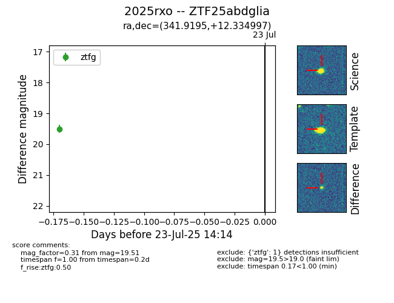

Target ZTF25abdglia at 2025-07-23 14:14, see:
FINK: fink-portal.org/ZTF25abdglia
Lasair: lasair-ztf.lsst.ac.uk/objects/ZTF25abdglia
ALeRCE: alerce.online/object/ZTF25abdglia
TNS: wis-tns.org/object/2025rxo
YSE: ziggy.ucolick.org/yse/transient_detail/2025rxo
alt names
ZTF25abdglia (ztf,fink)
2025rxo (tns,yse)
coordinates:
equatorial (ra, dec) = (341.9195,+12.33500)
galactic (l, b) = (81.6555,-40.41479)
photometry
last ztfg=19.51
1 ztfg detections
